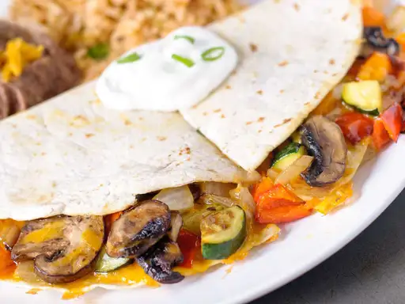

Farmer's Market Vegetarian Quesadillas

Description
Making the most of simple, fresh ingredients found at your
local farmers' market, these vegetarian quesadillas make
great appetizers or a quick and healthy meal. Serve while
hot with your favorite salsa, sour cream, and guacamole.
Ingredients
- ½ cup chopped red bell pepper
- ½ cup chopped zucchini
- ½ cup chopped yellow squash
- ½ cup chopped red onion
- ½ cup chopped mushrooms
- 1 tablespoon olive oil
- cooking spray
- 6 (9 inch) whole wheat tortillas
- 1 ¼ cups shredded reduced-fat sharp Cheddar cheese
Steps
-
Cook red pepper, zucchini, yellow squash, onion, and mushrooms
in olive oil in a large nonstick skillet over medium to
medium-high heat until just tender, about 7 minutes.
Transfer vegetables to a bowl.
-
Coat same skillet with cooking spray; place one tortilla in
skillet. Sprinkle 1/4 cup cheese evenly over tortilla; layer
3/4 cup vegetable mixture on top. Sprinkle 1/8 cup more
cheese on vegetables; top with a second tortilla. Cook
until golden on both sides, about 2 to 3 minutes per side.
Transfer quesadilla to a cutting board; cut into 8 triangles
with a pizza cutter. Repeat with remaining ingredients. Serve hot.